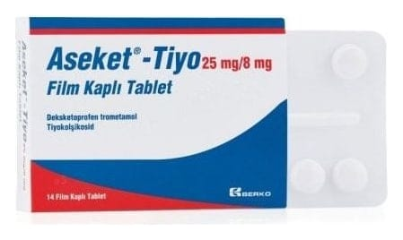

Aseket-Tiyo 25 mg/8 mg Film Kaplı Tablet, 14 Adet

Ne için kullanılır
KT · Bölüm 1ASEKET-TİYO tablet, etkin madde olarak deksketoprofen ve tiyokolşikosid içerir.
ASEKET-TİYO’nun içeriğindeki deksketoprofen, steroid olmayan iltihap giderici ilaçlar (NSAİİ) olarak adlandırılan ilaç grubundan bir ağrı kesicidir. ASEKET-TİYO’nun içeriğindeki tiyokolşikosid esas olarak kas gevşetici etkinliğe sahiptir. Tiyokolşikosid, ağrılı kas kramplarının belirtilere yönelik tedavisi amacıyla kullanılır.
ASEKET-TİYO, sarı renkli, yuvarlak, bikonveks, çift tarafı çentikli tabletlerdir (çentiğin amacı yalnızca yutmak için tabletin kırılmasını kolaylaştırmaktır, tabletin eşit dozlara bölünmesi için değildir).
ASEKET-TİYO 14 film kaplı tablet içeren PVC/PVDC/ALU blister ambalajlarda sunulmaktadır.
Kalp-damar sistemi ile ilgili riskler NSAİİ’ler ölümcül olabilecek kalp-damar sisteminde pıhtılaşmayla ilgili (trombotik) olaylar, kalp krizi ve inme riskinde artışa neden olabilir. Bu risk kullanım süresine bağlı olarak artabilir. Kalp-damar hastalığı olan veya kalp-damar hastalık risk faktörlerini taşıyan hastalarda risk daha yüksek olabilir. ASEKET-TİYO kalp-damar (koroner arter by-pass) cerrahisi öncesi ağrı tedavisinde kullanılmamalıdır. Sindirim sistemi ile ilgili riskler NSAİİ’ler kanama, yara oluşması, mide veya bağırsak delinmesi gibi ölümcül olabilecek ciddi istenmeyen etkilere yol açarlar. Bu istenmeyen etkiler herhangi bir zamanda, önceden uyarıcı bir bulgu vererek veya vermeksizin ortaya çıkabilirler. Yaşlı hastalar bu ciddi istenmeyen etkiler bakımından daha yüksek risk taşımaktadırlar. ASEKET-TİYO osteoartrit (kireçlenme), vertebral kolonun (omurganın) ağrılı sendromları, eklem dışı romatizma, ağrılı kas kasılmalarının belirtilere yönelik tedavisinde, travma ve ameliyat sonrası oluşan ağrının tedavisinde kullanılır.